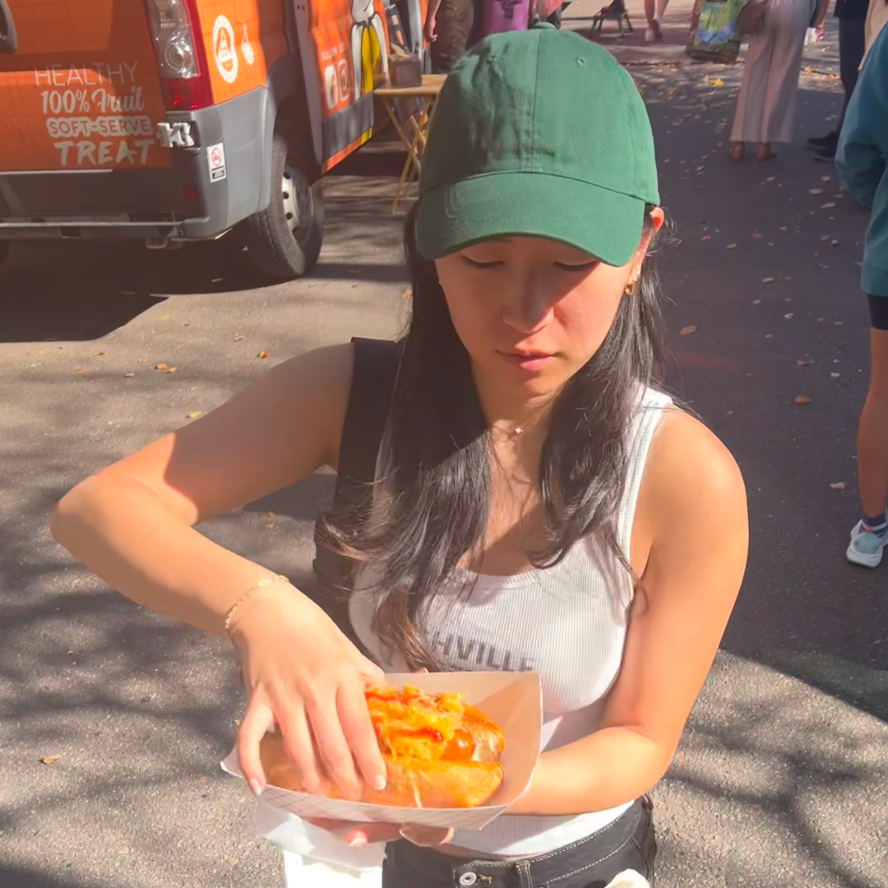
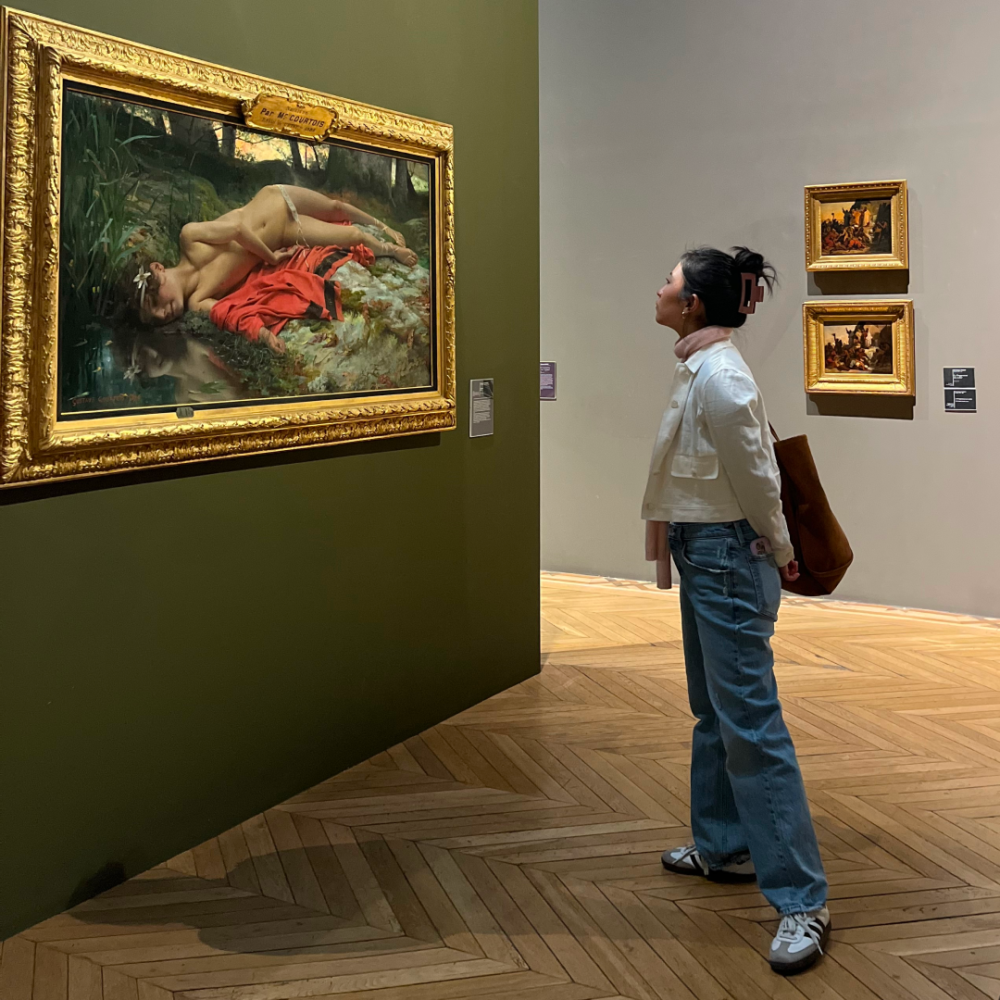

I'm a product designer shaped by storytelling, systems, and figuring out what actually matters.
I’m drawn to ambiguous problems and early-stage ideas, where good design isn’t just the interface but the decisions behind it. A lot of my work sits at the intersection of product and systems thinking, balancing competing constraints to create something that actually holds up.
Recently, I’ve been working more AI-native — using it for research, synthesis, and prototyping. I’m especially interested in AI and creative tools that help people understand, create, and do more.
When I’m not designing, I’m usually watching a new show, going on long walks with friends, or trying a new place on Beli.
I’m looking for thoughtful product teams building ambitious tools with real cultural or behavioral impact. To befriend me or hire me, reach out on LinkedIn or email me at [email protected].
Experience
- Regular People Freelance Graphic Designer 2025–Present
- AKADEMIA Test Prep Digital Marketing & Design Coordinator 2023–2025
- Meal Village Product & Visual Designer (Contract) 2022–2023
- Authentic Media Ascension Lead Product & Brand Designer 2021–2023
- Northwestern University Student Affairs Graphic Designer 2020–2022



